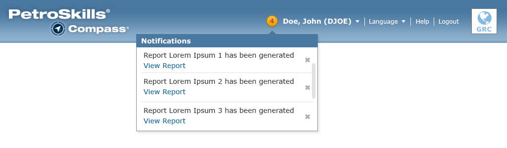

These elements alter page content when users interact with them.
The Notification control is placed before the user's name in the header area of the Compass UI. It displays the number of notifications that are sent to the user by the Compass system.
When the Notification indicator is at zero, the number and the circle icon are darken. When it is at 1 or more, the number and the circle icon is lit up with an orange color.
When the number icon is clicked, a pop-up overlay appears and is positioned below the number icon.
At this time, the notification control is being used for:

When the notification counter is 1 or more, the user can click on the numbered icon to open up a pop-up overlay. This pop-up overlay is a scrollable control which allows the user to see more than 3 notifications at a time.
When the notification counter is at zero, the user can click on the numbered icon to open up a pop-up overlay. The overlay will display a "You have no notifications at this time" message.